Соленоидальный индуктор
для генерации постоянного однородного
магнитного поля в цилиндрической зоне диаметром 30 мм высотой до 126 мм
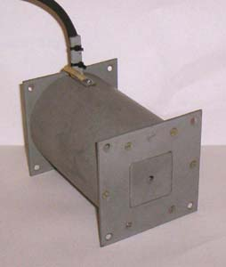
1. Назначение
Соленоидальный индуктор представляет из себя однокатушечный электромагнит [10], позволяющий генерировать постоянное магнитное поле с достаточно высокой степенью однородности в цилиндрической области диаметром 30 мм и высотой до 126 мм с осевым доступом через снимаемые крышки. Электрические параметры обмотки индуктора выбраны таким образом, чтобы его можно было запитать от сети переменного тока напряжением 220 В через регулируемый автотрансформатор (ЛАТР) или даже напрямую с использованием простейшей цепи из мостового диодного выпрямителя и конденсатора в качестве фильтра [6]. Сферы применения устройства: изучение свойств веществ в постоянном однородном магнитном поле, калибровка приборов для измерения магнитных полей [7].
2. Тепловой расчет
Для того, чтобы соленоид генерировал магнитное поле с индукцией примерно до 250 мТл, необходимо создать достаточно большую плотность тока в обмотке (порядка 10 А/мм2). При таких плотностях тока естественное и даже принудительное охлаждение обмотки малоэффективно, а продолжительность работы соленоида ограничена временем, за которое достигается максимально допустимая температура используемого обмоточного провода, по сути, при отсутствии охлаждения. При таком режиме работе (время работы t в пределах 0 … t0) процесс нагрева обмоточного провода можно считать адиабатическим [3]. Электрическая энергия тока I полностью превращается в тепло, идущее на нагрев провода длиной le, массой m, сопротивлением R:
где cp – молярная изобарная теплоемкость материала провода, M – молярная масса материала провода, DT – разность конечной и начальной температур провода (перегрев). Или
где r – плотность материала провода, re – удельное электрическое сопротивление материала провода, S – площадь поперечного сечения провода. Тогда, сокращая длину отрезка провода le, получим:

Для одиночного прямоугольного импульса тока (I(t) = I0 при 0 < t < t0; I(t) = 0 при t > t0):

Отсюда перегрев провода DT при одиночном прямоугольном импульсе тока с амплитудой I0 и длительностью t0 независимо от длины провода равен:

Для случая
соленоида, намотанного медным проводом:
M =
0.06355 кг/моль
r
= 8700 кг/м3
re
= 1.67 ∙ 10-8 Ом ∙ м
cp
= 24.43 дж/(моль ∙ K)
I0/S = 1.534 ∙ 107 А/м2
t0
= 60 c
получаем:

Таким образом, при плотности тока в медном обмоточном проводе 15.34 А/мм2 (≈15 А/мм2) его перегрев в течение 60 секунд (минимально допустимое время включения при проведении измерений) составит 71 0C, т. е. при начальной температуре провода 25 0C его конечная температура не превысит 100 0C, что вполне приемлемо для обмоточных проводов с термостойкостью 130 0C (ПЭТ, ПЭТВ). При этом следует помнить, что плотность тока в обмотке равна плотности тока в обмоточном проводе, умноженной на фактор упаковки [9]. Если фактор упаковки равен примерно 0.55 (l = 0.55, намотка виток к витку с межслойной бумажной изоляцией), то плотность тока в обмотке будет составлять 15.34 ∙ 0.55 = 8.437 А/мм2.
3. Конструкция
Эскиз соленоидального индуктора изображен на рис. 3.1.
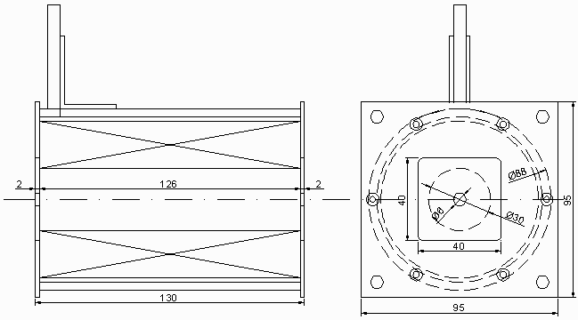
Рис. 3.1. Эскиз соленоидального индуктора для генерации постоянного однородного магнитного поля.
Цилиндрический соленоид высотой 126 мм с отверстием диаметром 30 мм и внешним диаметром примерно 78 мм помещен в стальной цилиндрический корпус с внешним диаметром 88 мм с квадратными стальными фланцами толщиной по 2 мм. Во фланцах прорезаны квадратные отверстия, которые могут с минимальными немагнитными зазорами закрываться стальными крышками. Для удобства проведения измерений в крышках имеются отверстия диаметром 6 мм. В целях повышения однородности генерируемого магнитного поля крышки могут быть снабжены полюсными наконечниками. Для дополнительного улучшения однородности магнитного поля в рабочей зоне соленоид имеет внешнюю однослойную трехсекционную компенсационную обмотку с переменным направлением намотки. Внешний вид соленоидального индуктора в разных ракурсах показан на рис. 3.2.
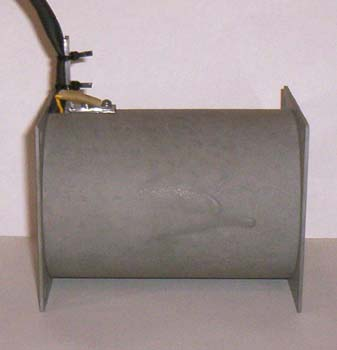 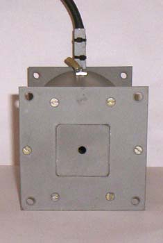 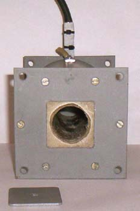
Рис. 3.2. Внешний вид соленоидального индуктора для генерации постоянного однородного магнитного поля: сбоку, спереди с установленной крышкой, спереди со снятой крышкой.
4. Расчет обмотки
Обмотка соленоидального индуктора представляет из себя цилиндрический соленоид (рис. 4.1), расчет параметров которого может быть выполнен с помощью программы Coil [2].
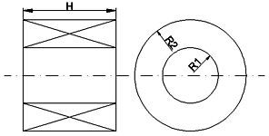
Рис. 4.1. Цилиндрический соленоид: высота H, радиус отверстия R1, внешний радиус R2, диаметр обмоточного провода D, фактор упаковки [8] l.
На рис. 4.2 показан расчет параметров и магнитного поля цилиндрического соленоида индуктора в программе Coil [2].
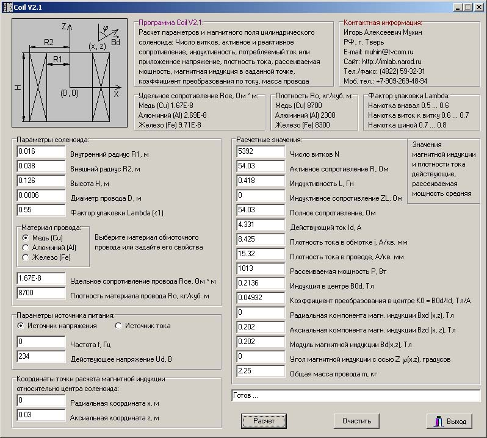
Рис. 4.2. Расчет обмотки соленоидального индуктора с помощью программы Coil [2].
При предельной по тепловому расчету плотности тока в проводе 15.32 А/мм2 плотность тока в обмотке составляет 8.425 А/мм2. Число витков5392, ток 4.331 А, магнитодвижущая сила (МДС) 23353 А ∙ витков. Коэффициент преобразования по току в центре соленоида составляет примерно 49 мТл/А, при этом максимальная индукция магнитного поля может достигать 0.21 Тл при токе обмотки 4.3 А. Индуктивность соленоида 418 мГн, активное сопротивление примерно 54 Ом.
5. Магнитный расчет
Расчет распределения магнитного поля в соленоидальном индукторе произведен методом конечных элементов [9] с помощью программы Ansoft Maxwell [1]. Примеры трехмерных расчетных моделей показаны на рис. 5.1.
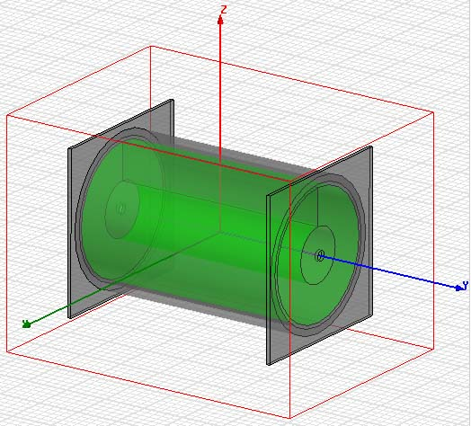
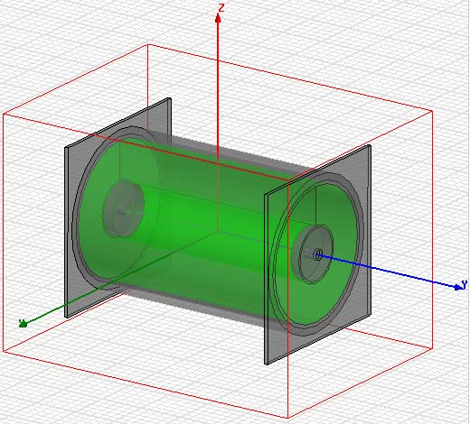
Рис. 5.1. Расчетные модели соленоидального индуктора постоянного магнитного поля. Слева - без полюсных наконечников, справа - с полюсными наконечниками диаметром 29.5 мм и высотой 6 мм каждый.
Корпус соленоидального индуктора и полюсные наконечники сделаны из малоуглеродистой стали марки 1010 (Ст10), кривая намагничивания которой показана на рис. 5.2. МДС для расчета магнитной индукции в соответствии с п. 4 принята равной 23353 А ∙ витка (ток 4.331 А, число витков 5392).

Рис. 5.2. Кривая намагничивания малоуглеродистой стали (марка 1010, Ст10).
Расчетная зависимость аксиальной составляющей магнитной индукции на оси соленоидального индуктора от расстояния до его центра для полюсных наконечников разной высоты (0, 2, 4, 6 мм) показана на рис. 5.3.
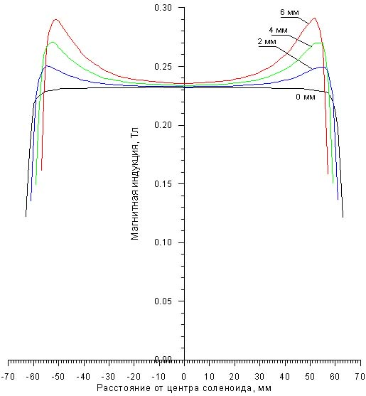
Рис. 5.3. Магнитная индукция на оси соленоидального индуктора. Красная линия - полюсные наконечники высотой по 6 мм, зеленая линия - полюсные наконечники высотой по 4 мм, синяя линия - полюсные наконечники высотой по 2 мм, черная линия - крышки без полюсных наконечников (0 мм).
Ниже на рис. 5.4 - 5.7 показан результат расчета магнитной индукции на оси и на расстоянии 10 мм от оси для полюсных наконечников разной высоты (0, 2, 4, 6 мм).
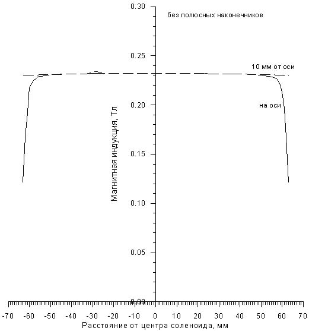
Рис. 5.4. Магнитная индукция на оси и на расстоянии 10 мм от оси соленоидального индуктора с крышками без полюсных наконечников.
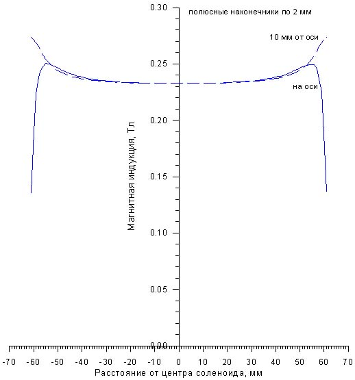
Рис. 5.5. Магнитная индукция на оси и на расстоянии 10 мм от оси соленоидального индуктора для полюсных наконечников высотой по 2 мм.
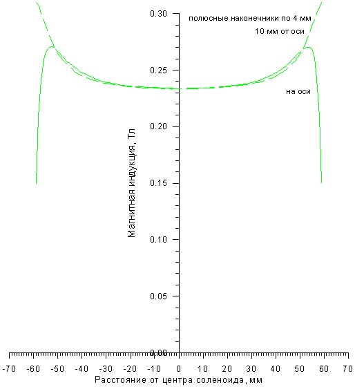
Рис. 5.6. Магнитная индукция на оси и на расстоянии 10 мм от оси соленоидального индуктора для полюсных наконечников высотой по 4 мм.
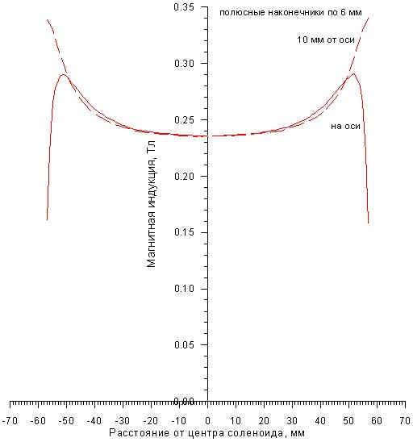
Рис. 5.7. Магнитная индукция на оси и на расстоянии 10 мм от оси соленоидального индуктора для полюсных наконечников высотой по 6 мм.
Наиболее приемлемо выглядят два варианта - крышки без полюсных наконечников и крышки с полюсными наконечниками по 2 мм.
Расчетные значения
индуктивности соленоидального индуктора (число витков обмотки 5392) на
постоянном токе:
с крышками без полюсных наконечников 511.24 мГн
с крышками и полюсными наконечниками по 2 мм 517.83 мГн
с крышками и полюсными наконечниками по 4 мм 533.73 мГн
с крышками и полюсными наконечниками по 6 мм 551.43 мГн
Расчетный коэффициент преобразования в центре соленоидального индуктора с крышками, имеющими полюсные наконечники или без них, составляет примерно 54 мТл/А.
6. Испытания
Поверх основной обмотки индуктора (5250 витков) сверху намотана дополнительная однослойная трехсекционная компенсационная обмотка с переменным направлением намотки, позволяющая несколько увеличить магнитную индукцию на краях рабочей зоны и уменьшить ее в центре (за счет изменения направления намотки). Компенсационная обмотка соединена последовательно с основной.
Измерения
активного сопротивления обмотки проводились мультиметром
APPA-107N, измерения индуктивности - прибором VC6243
на частоте 1000 Гц:
Активное сопротивление обмотки индуктора в сборе
59.17 Ом
Индуктивность индуктора в сборе без крышек 407 мГн
Индуктивность индуктора в сборе с крышками без полюсных наконечников 415 мГн
Индуктивность индуктора в сборе с крышками с полюсными наконечниками 2 мм 417
мГн
Индуктивность индуктора в сборе с крышками с полюсными наконечниками 6 мм 424
мГн
Схема установки для измерения магнитной индукции показана на рис. 6.1. Регулируемое напряжение с выхода ЛАТРа, подключенного к сети переменного тока напряжением 220 В частотой 50 Гц, подается на диодный мост VD1-VD4 через токоограничивающий конденсатор C1. Автомат S1 выпрямителя выполняет функцию защиты при коротком замыкании в цепях этого узла. Дроссель L1 ограничивает скорость нарастания тока через диоды моста при включении выпрямителя. П-образный фильтр C2L2C3 служит для сглаживания пульсаций выходного напряжения диодного моста. Резисторная цепочка R1R2 используется в качестве нагрузки выпрямителя при холостом ходе, а также для быстрой разрядки конденсаторов C2C3 после выключения сетевого напряжения. Обмотка индуктора ЭМ1 подключается к выходу выпрямителя через амперметр PA1 (цифровой мультиметр в режиме амперметра с диапазоном 10 А, например, DT9205A или аналогичный). Для измерения магнитной индукции в рабочей зоне индуктора используется аналоговый тесламетр [4] с датчиком Холла типа ПХЭ606118В [5]. К выходу тесламетра подключается цифровой мультиметр в режиме вольтметра с диапазоном 200 мВ (например, DT9205A или аналогичный).
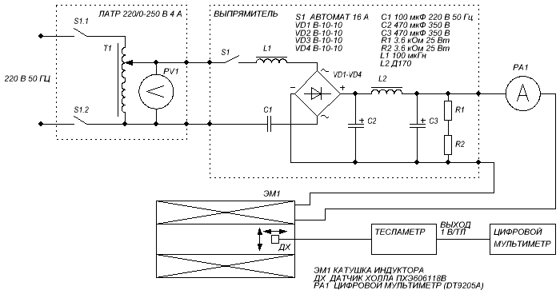
Рис. 6.1. Схема установки для измерения магнитной индукции в рабочей зоне соленоидального индуктора.
Измерения осевой составляющей магнитной индукции в рабочей зоне проведены при токе питания обмотки 2 А. Результаты измерений приведены на рис. 6.2.
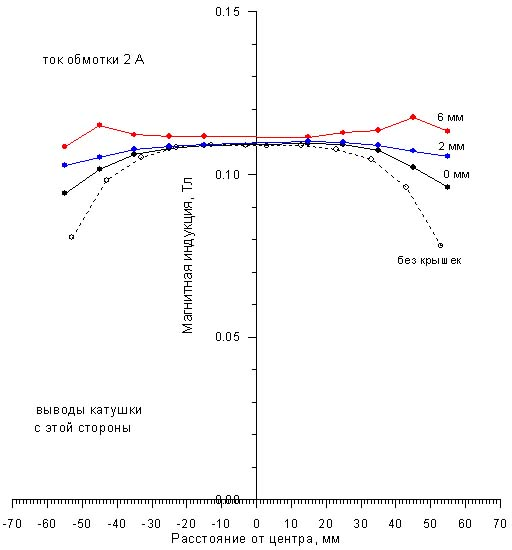
Рис. 6.2. Результаты измерений магнитной индукции (ток обмотки 2 А). Красная линия - полюсные наконечники по 6 мм, магнитная индукция на оси, синяя линия - полюсные наконечники по 2 мм, магнитная индукция на оси, черная линия - крышки без полюсных наконечников, магнитная индукция на оси, пунктирная линия - без крышек, магнитная индукция на расстоянии 10 мм от оси.
На рис. 6.3 показана зависимость магнитной индукции в центре соленоидального индуктора от тока обмотки при снятых крышках.
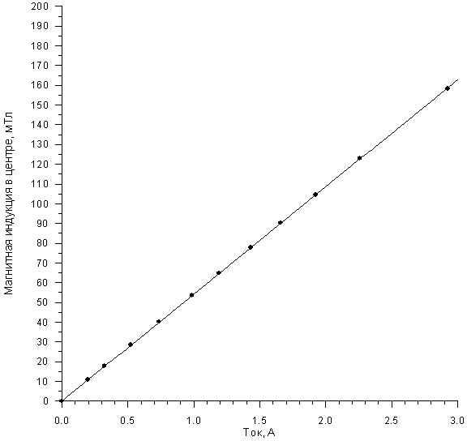
Рис. 6.3. Зависимость магнитной индукции в центре соленоидального индуктора от тока обмотки при снятых крышках.
Зависимость магнитной индукции в центре рабочей зоны B0 (в мТл) от тока обмотки I (в А) с хорошей точностью может быть выражена линейной зависимостью:
Таким образом, коэффициент преобразования в центре соленоидального индуктора без крышек составляет примерно 54 мТл/А. При установке крышек без полюсных наконечников и с полюсными наконечниками по 2 мм он практически не изменится, а при установке крышек с полюсными наконечниками по 6 мм несколько увеличится (в соответствии с графиком рис. 6.2).
Результаты расчетов и испытаний соленоидального индуктора достаточно хорошо согласуются друг с другом.
7. Технические характеристики соленоидального индуктора:
8. Источники питания и приборы контроля
Для возбуждения тока в обмотке соленоидального индуктора могут применяться источники питания различной конструкции [6, 10], обеспечивающие на выходе как регулируемое, так и нерегулируемое постоянное напряжение до 300 В при выходном токе до 5 А.
Контролировать величину магнитной индукции в рабочей зоне соленоидального индуктора можно напрямую с помощью тесламетра [4, 7] или косвенным методом по потребляемому току через калибровочную кривую (рис. 6.3).
Ссылки:
09.10.2019
Альтернативные источники
энергии
Компьютеры и
Интернет
Магнитные поля
Механотронные системы
Перспективные
разработки
Электроника и
технология